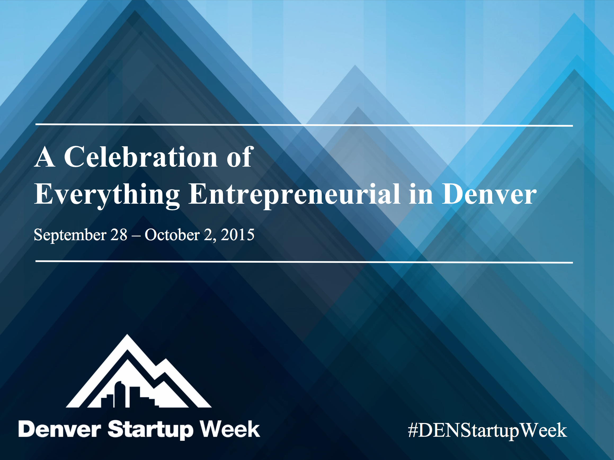

Please share your experiece
at this session online using
#DENStartupWeek
The Power Behind Real-Time Push Notifications Using Webhooks
Who am I?
Kyle Tolle
Software Engineer at Spatial Networks
Implemented webhooks in Fulcrum, our mobile data collection service
First off
Ask questions at any time!
Slides for this talk
Presentation:
https://kyletolle.github.io/dsw_webhooks_talk
Code:
How many of you
- have some knowledge of webhooks?
- have used webhooks before?
- offer webhooks at your company?
Overview
- Flexibility and integrations
- How clients use APIs
- Why webhooks are a thing
- Barebones webhooks demo
- Webhooks integration demo
- Other use cases for webhooks
- Recapping and wrapping up
Our fictional client
Government Agency for Bear Attacks
Why bear attacks?
Vicious

Relentless

Unexpected
So I’m here
to talk about webhooks
But first
we need some background
Let’s start with
what we know
Startups
Staying small, focused, and agile
makes your value clear
Flexibility is your power
They fit you into their workflow
More likely to use your service
What’s this mean in practice?
Give clients easy access to their data
They can hook you up to other services
This is a good way to
Avoid vendor lock-in
&
Build goodwill
How do you deliver this flexibility?
Integrating with specific services
But you have to predict it
And then maintain it
Instead, what about…
General patterns for integration
These are even better for
allowing many of them
Flexible going forward
Not hardcoding for the service-du-jour
Integrate with other services that are relevant later
Extends your relevancy
Gives customers flexibility to do anything they want
Fit into their business and workflow over time
Document it well
Make it easy to understand and get started with
They can build their own integrations
Also helpful when you do integration work for clients
How do we do this?
As web developers
what general integration pattern
are we already familiar with?
APIs
Why do we have APIs?
APIs allow
people to get their data
How do APIs work?
The client calls us
Why do they want their data?
To do things with it!
How do they use the API?
- Call our API
- Frequently
- In a script/application
This is
polling
Polling is straight-forward
But there are some
Downsides
#1
Your client writes the code
How long until
someone murders your servers?
#2
To react faster, they have to poll more
More polling means
more resources
- development time
- support time
- processors
- memory
- bandwidth
#3
It’s mostly useless
Most polls won’t return new data
#4
And it’s still not Real-Time™
Okay
we see the disadvantages
But so what?
We already have an API
- It exists
- It works
Let’s come back to what’s important
Fast response time
is what’s valuable
&
Polling helps them react quickly
But it’s only one approach
How else can we help them react quickly?
Because, if we can do this…
It’ll make our service more valuable
And that means happier customers
Maybe even some extra revenue
We know that polling is
Client –> Us
But what about the other way around?
Us –> Client
Hmm, this is interesting
Instead of
them calling us
to see if data changes
We let them know
when data has changed
Let’s do this over the web
since it’s common infrastructure
Client gives us a URL
&
We have events we watch for
When an event happens,
we make an HTTP POST request
to our client’s URL
and deliver some data
Boom, Webhooks!

The Benefits
#1
We write the code
#2
Fewer resources required
#3
We send the data just as it changes
This is Real-Time™
This is what I mean by
Push Notifications for the web
Exciting for integration!
We’ll see real-world examples later
We’ve got our background!
How about implementing it?
Let’s see a small example
Show us making a single request
Start small & build momentum
The Idea
- Generate a random number
- Send a webhook to our client with that number
We’ll have a client server running, Polis.rb
A small web server which logs POST data
Random Number Generator
require_relative '../lib/webhooks'
class RandomNumberGenerator
include Webhooks
def initialize
self.webhooks = %w{http://localhost:9000}
end
def generate
random_number = SecureRandom.random_number(1000)
send_webhooks(:random_number, :generate, random_number)
return random_number
end
end
In IRB
require './examples/random_number_generator.rb'
> puts RandomNumberGenerator.new.generate
=> 863
From the client
We see the webhook request
$ PORT=9000 bf
...
Logging POST request:
...
Body:
{"event":"random_number:generate","data":863}
...
Webhooks module
require 'net/http'
require 'securerandom'
require 'json'
module Webhooks
attr_accessor :webhooks
def send_webhooks(resource, action, data)
event_type = "#{resource}:#{action}"
payload = JSON.generate({
event: event_type,
data: data })
webhooks.each do |webhook|
url = URI.parse(webhook)
Net::HTTP.start(url.host, url.port) do |http|
headers = { 'Content-Type' => 'application/json' }
response = http.post('/', payload, headers)
end
end
end
end
Client code
...
class Polis < Sinatra::Base
...
post '/' do
# Note: Thanks to this SO page: http://stackoverflow.com/a/6318491/249218
http_headers = env.select{|h| h =~ /HTTP_/}
body_string = request.body.read
...
logger.info <<-LOG
Logging POST request:
Headers:
#{http_headers}
Body:
#{body_string}
LOG
status 200
return body_string
end
...
end
We sent our first webhook!
There’s no official spec
It’s a general practice to
Send data to a URL
when something happens
Requires some effort
to implement the specifics
but the idea has been around for a while
How about another demo?
- Push a button on a site
- Generate a random number
- Send a text message
Random Number Button
Before we push the button

After we push the button

And the text sent

Client code
...
class RandomNumberTexter < Sinatra::Base
...
post '/' do
request.body.rewind
post_body = request.body.read
if request.content_type == 'application/json'
payload = JSON.parse post_body
is_random_number_generate = payload['event'] == 'random_number:generate'
return unless is_random_number_generate
has_payload_data = payload['data']
return unless has_payload_data
random_number = payload['data']
send_text(random_number)
status 201
else
status 202
end
post_body
end
...
end
It still feels like magic

Who uses them?
Loads of companies!
Get ready for more examples
Let open the floodgates of possibility
Organize customer support
Several services feed into our #support channel in Slack
- Support emails
- Tender help forum posts
- Intercom messages
Keep developers in the loop
GitHub issues and pull requests feed into #github
Continuous integration runs after pushing to GitHub
CI passes/failures show in #engineering
Have fun with your service

Enable timely communication
when something needs immediate attention
Sync with external services
Sync with CartoDB for visualization and analysis
using PHP or Google Apps Script
Sync to external databases
to run through custom analysis pipelines
Fetch data from external services
Programmatically add weather data from Forecast.io
- Automatic
- Standardized
- Accurate
Platform and language agnostic
Common web patterns make it
plug and play with many tech stacks
and more flexible for our clients
They may not care about webhooks at first, but
Clients can grow into them
Services make integrations easier
- Zapier
- Connects many services together
- Pushbullet
- Push notifications to devices
- Google Apps Script
- Run webhook endpoints on Google
Webhooks Recap
- Communicate events between your server and a client’s using HTTP
- Webhooks accompany an API to enable powerful integrations
- Only real requirement is a web server
- You can do lots of cool stuff with them
Force multiplier
We don’t have a huge engineering team
Webhooks allow us to have a greater impact
Other things to think about
- Use background jobs
- Send requests sequentially
- Persisting requests
- Handle failures
- Performance
Webhooks Docs for Fulcrum
What’s Next?
- Create gem(s) to help others add webhooks to their code
- Would you find this useful?
- Create/extend tools for using, testing, debugging
- Make webhooks easier to debug
- Add scoping to webhooks
Links to Code
- Webhooks module, random number generator, random number button site
- Simple webhooks endpoint
- Random number texter
- Script to create this presentation